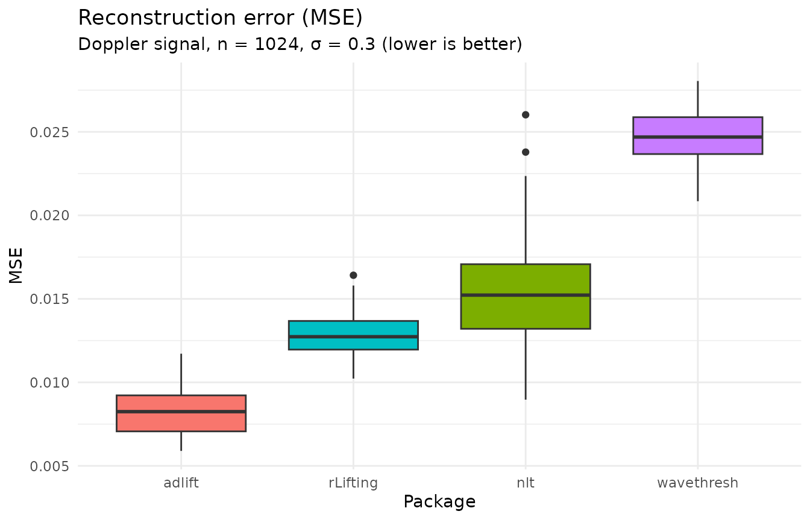

2. Benchmark: speed and reconstruction accuracy
Source:vignettes/benchmark_offline.Rmd
benchmark_offline.RmdThis vignette compares rLifting against established R
packages (wavethresh, adlift,
nlt) on a standard offline denoising task, evaluating both
execution speed and reconstruction accuracy (MSE).
Setup and methodology
All benchmarks denoise a Doppler signal
(,
)
over 50 independent noise realizations. Timing covers the full pipeline
(forward transform, thresholding, and inverse transform) and is measured
with nanosecond precision via microbenchmark.
To comply with CRAN time limits, the results are pre-computed by the
script data-raw/generate_vignette_data.R and shipped as
package data. The raw data is available via
data("benchmark_offline").
For comparability, all packages use a Haar (or equivalent
first-order) wavelet. Note that rLifting supports
additional wavelet families (CDF 5/3, CDF 9/7); the Haar filter is used
here solely to ensure a fair comparison.
| Package | Paradigm | Thresholding | Implementation |
|---|---|---|---|
rLifting |
Lifting scheme | Semisoft (adaptive) | C++ core via Rcpp |
wavethresh |
DWT | Universal soft | R with C internals |
adlift |
Adaptive lifting | EbayesThresh | Pure R, local polynomial prediction |
nlt |
Nonnested lifting | EbayesThresh | Pure R, permutation-based prediction |
library(rLifting)
if (!requireNamespace("dplyr", quietly = TRUE) ||
!requireNamespace("ggplot2", quietly = TRUE) ||
!requireNamespace("knitr", quietly = TRUE)) {
knitr::opts_chunk$set(eval = FALSE)
message("Required packages 'dplyr', 'ggplot2' or 'knitr' are missing. Vignette code will not run.")
} else {
library(ggplot2)
library(dplyr)
library(knitr)
}
#>
#> Attaching package: 'dplyr'
#> The following objects are masked from 'package:stats':
#>
#> filter, lag
#> The following objects are masked from 'package:base':
#>
#> intersect, setdiff, setequal, union
data("benchmark_offline", package = "rLifting")1. Execution speed
df_speed = benchmark_offline |>
filter(!is.na(Time)) |>
group_by(Pkg) |>
summarise(
Median_ms = median(Time) * 1000,
Mean_ms = mean(Time) * 1000,
.groups = "drop"
) |>
arrange(Median_ms) |>
mutate(
Paradigm = case_when(
Pkg == "wavethresh" ~ "DWT",
Pkg %in% c("adlift", "nlt") ~ "Adaptive Lifting",
TRUE ~ "Lifting"
)
) |>
select(Pkg, Paradigm, Median_ms, Mean_ms)
kable(df_speed,
col.names = c("Package", "Paradigm", "Median (ms)", "Mean (ms)"),
digits = 2,
caption = "Execution time for the full denoising pipeline (1024 points, Haar).")| Package | Paradigm | Median (ms) | Mean (ms) |
|---|---|---|---|
| rLifting | Lifting | 0.05 | 0.05 |
| wavethresh | DWT | 1.24 | 1.30 |
| nlt | Adaptive Lifting | 2507.97 | 2226.27 |
| adlift | Adaptive Lifting | 2582.44 | 2305.71 |
rLifting is the fastest package, thanks to its
zero-allocation C++ core (via Rcpp). wavethresh, the
standard DWT implementation in R, is moderately slower but still fast.
The adaptive lifting packages (adlift and nlt)
are orders of magnitude slower than both rLifting and
wavethresh, because they fit local polynomial predictors at
every lifting step.
2. Reconstruction accuracy (MSE)
Speed means nothing without accuracy. Here we compare the MSE of each denoised signal against the ground truth.
df_mse = benchmark_offline |> filter(!is.na(MSE))
ggplot(df_mse, aes(x = reorder(Pkg, MSE), y = MSE, fill = Pkg)) +
geom_boxplot() +
labs(
title = "Reconstruction error (MSE)",
subtitle = "Doppler signal, n = 1024, \u03c3 = 0.3 (lower is better)",
x = "Package",
y = "MSE"
) +
theme_minimal() +
theme(legend.position = "none")
3. The speed-accuracy trade-off
The lifting-based packages (adlift, nlt,
and rLifting) achieve the lowest MSE values. This is not a
coincidence: the lifting scheme operates directly in the spatial domain
and can accommodate adaptive thresholding strategies that are difficult
to implement in a classical DWT framework.
adlift achieves the best MSE because it uses adaptive
local polynomial prediction, choosing the predictor that best fits each
local neighborhood. nlt uses a permutation-based ordering
to find an optimal lifting path and applies EbayesThresh for coefficient
shrinkage. Both strategies adapt the wavelet basis itself to the signal,
yielding excellent reconstruction for smooth or piecewise-smooth
functions.
rLifting uses a fixed wavelet (Haar in this example) but
applies adaptive semisoft thresholding. This combination yields MSE
values competitive with nlt and close to
adlift, while running orders of magnitude faster.
The classical DWT package (wavethresh) applies a fixed
wavelet with universal soft thresholding. While it is fast, its
reconstruction accuracy is lower than all three lifting-based
approaches.
In summary, the marginal MSE improvement of adlift and
nlt comes at a steep computational cost, making them
impractical for real-time or large-scale applications.
rLifting offers a practical balance: near-optimal accuracy
at a fraction of the computational budget.